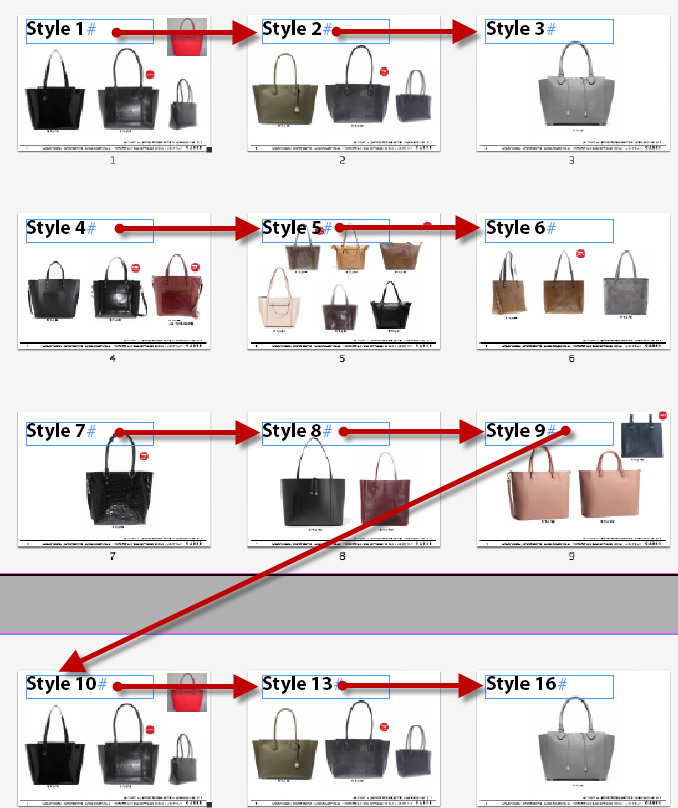
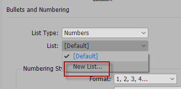
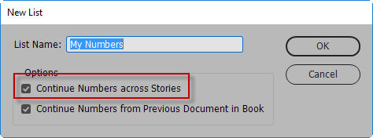
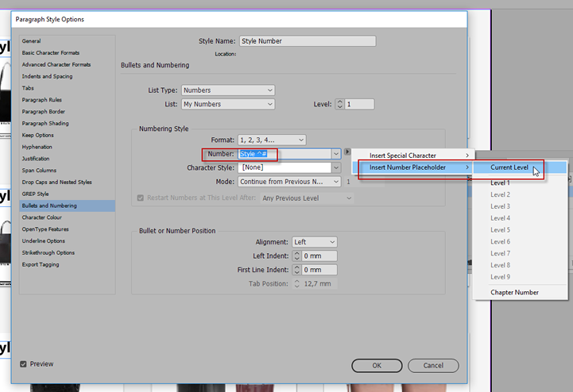

Numbering styles
Task:
I do multi page submissions in InDesign. Style 1 on page 1, Style 2 on page 2, Style 3 on page 3 etc. to say up to page 40, but when I shift pages around i want the style number to change as well. so, if style 3 moves to page 1. I want the number to change to Style 1

How can i achieve this?
Solution:
Here's what you do:
- Create a new paragraph style called 'Style Number'
- Define a new list (e.g. My Numbers). To number across different stories (unthreaded text frames), I generally set-up a separate list to be used by the paragraph styles.
- Select New List from the List menu in the Bullets and Numbering dialog box.

- Name the List, and enable Continue Numbers across Stories in the New List dialog box. Click OK, and click OK again

You should now be able to move pages around and the numbering will automatically adjust.
- AND for the Numbering Style, replace the current text, and type in 'Style', followed by a space character, followed by Insert Number Place Holder > Current Level.

- Ensure the Mode is set to 'Continue from Previous'
The only tricky bit is that you need to press the RETURN/ENTER key after applying the style to actually see the words 'Style 1' appear, as there is no other text added. (else you'd end up with an empty text frame)
However, if you now jumble pages around, the numbering will update across the pages.
Thanks for the tip to Cari Jansen. The source is here.
Click here to download the sample document (InDesign CC 2018, 900 KB)